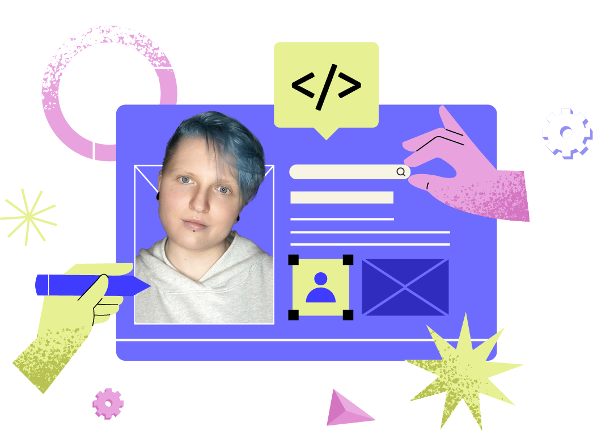

Hello, I am Nastia!
About Me
I’m a lifelong learner and creative professional with a deep interest in both technology and art. Whether it’s coding interactive web applications or designing original illustrations, I thrive on challenges and continuous growth. My goal is to combine technical expertise with creativity to build engaging experiences that make a difference.
Contact me PortfolioSkills
50%
Coding & Debugging
Efficient problem-solving skills, attention to detail, and a passion for clean code.
100%
Design & Illustrations
Skilled in digital art and design, I use tools like Adobe Creative Suite and Figma to create compelling visual stories.
80%
UX/UI Principles
I focus on designing intuitive user experiences and aesthetically pleasing interfaces that are both functional and engaging.
65%
Emerging Technologies
Efficient problem-solving skills, attention to detail, and a passion for clean code.
Always on the lookout for innovative trends, I continually expand my knowledge to stay ahead in the fast-evolving tech landscape.